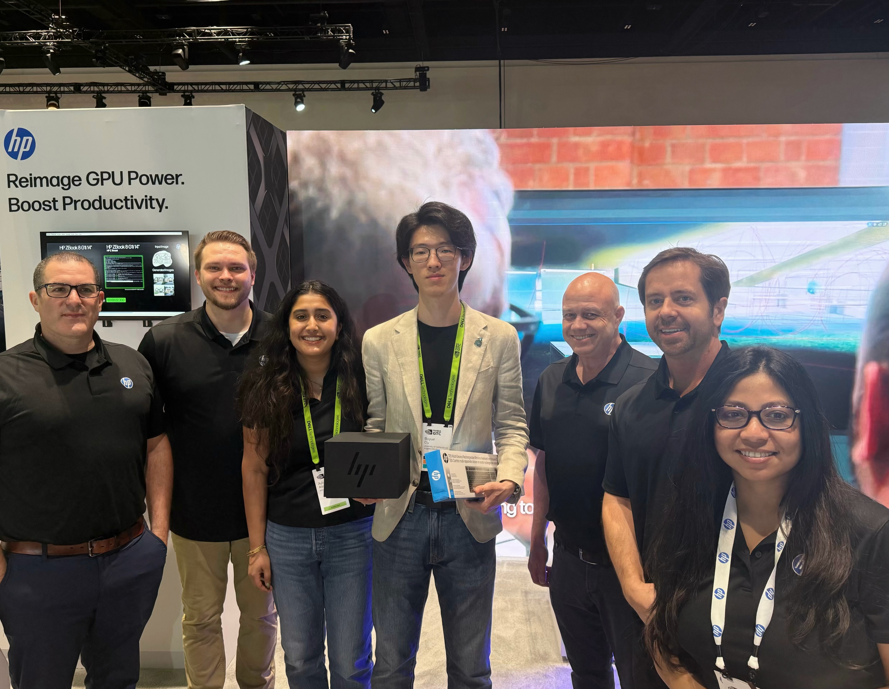

Education
- University of California, Los Angeles (UCLA) — M.S. in Electrical and Computer Engineering (Sep. 2025–Expected Jun. 2027)
- University of Wisconsin-Madison — B.S. in Electrical Engineering (Sep. 2021–May. 2025)
Research Fields
- Machine Learning
- AI4health, AI4culture
- Embodied Intelligence

Awards
-
NVIDIA GTC Hack for Impact — Culture Impact Track Winner (2026)

The NVIDIA GTC Hack for Impact award recognizes outstanding AI-driven solutions, with Symphonia Studio winning the Culture Impact track for enhancing accessibility to classical music through intelligent recommendation and interactive visualization.
- Novotny, Donald W. Scholarship (2024)
- WV Distinguished Scholarship (2024)
- WV Distinguished Scholarship (2023)
All scholarships above were awarded by the Department of Electrical and Computer Engineering at the University of Wisconsin–Madison.
Coursework
Click below to view a full list of courses I've completed:
View Undergraduate Courses View Graduate Courses